<meta charset="utf-8"><title>11/19のコラム note貼り付け</title>
<style>
/* one column of numbered paste steps; text steps vs image steps differ by marker */
:root{--bg:#F5F4F0;--card:#FFFFFF;--ink:#1D2321;--mute:#5F665F;--line:#DCDAD2;--btn:#1F5FBF;--btnok:#2E8B4F;--img:#E9F3EC;--imgink:#22663B;--sans:'IBM Plex Sans JP','Hiragino Sans','Noto Sans JP',sans-serif}
@media (prefers-color-scheme:dark){:root:not([data-theme="light"]){--bg:#171A19;--card:#202423;--ink:#ECEDE8;--mute:#A3AAA2;--line:#343937;--btn:#4D8BE6;--btnok:#3FA866;--img:#1E2C23;--imgink:#8FD3A6;color-scheme:dark}}
:root[data-theme="dark"]{--bg:#171A19;--card:#202423;--ink:#ECEDE8;--mute:#A3AAA2;--line:#343937;--btn:#4D8BE6;--btnok:#3FA866;--img:#1E2C23;--imgink:#8FD3A6;color-scheme:dark}
body{background:var(--bg);color:var(--ink);font-family:var(--sans);font-size:15px;line-height:1.75;padding:20px 16px 60px}
main{max-width:680px;margin:0 auto;display:grid;gap:28px}
header h1{font-size:22px;margin:0 0 6px;text-wrap:balance}
header p{margin:0;color:var(--mute);font-size:14px}
nav{display:flex;gap:8px;flex-wrap:wrap;margin-top:12px}
nav a{border:1px solid var(--line);border-radius:999px;padding:4px 14px;color:var(--ink);text-decoration:none;font-size:14px;background:var(--card)}
.part h2{font-size:18px;line-height:1.5;margin:0 0 12px;text-wrap:balance;display:flex;gap:10px;align-items:baseline;flex-wrap:wrap}
.tag{font-size:13px;background:var(--ink);color:var(--bg);border-radius:6px;padding:1px 9px}
.steps{list-style:none;margin:0;padding:0;display:grid;gap:12px}
.st{background:var(--card);border:1px solid var(--line);border-radius:12px;padding:12px;min-width:0}
.hd{display:flex;align-items:center;gap:8px;margin-bottom:8px}
.no{width:26px;height:26px;border-radius:50%;background:var(--btn);color:#fff;display:inline-flex;align-items:center;justify-content:center;font-size:13px;font-weight:700;flex:0 0 26px}
.im .no{background:var(--btnok)}
.hd em{font-style:normal;font-size:12px;background:var(--img);color:var(--imgink);border-radius:6px;padding:0 8px}
.bx{font-size:13.5px;line-height:1.7;border:1px solid var(--line);border-radius:8px;padding:8px 10px;max-height:110px;overflow:auto;overflow-wrap:anywhere}
.bx.tall{max-height:150px}.bx p{margin:0 0 6px}.bx h2{font-size:14px;margin:8px 0 4px}.bx a{color:var(--btn)}
.st img{display:block;width:100%;max-width:100%;border:1px solid var(--line);border-radius:8px}
.sub{font-size:12.5px;color:var(--mute);margin:6px 0 0}
.cp{width:100%;margin-top:8px;padding:12px;border:0;border-radius:10px;background:var(--btn);color:#fff;font:600 15px var(--sans);cursor:pointer}
.cp.ok{background:var(--btnok)}.cp.dl{background:var(--btnok)}.cp:focus-visible{outline:3px solid var(--ink);outline-offset:2px}
.xh{font-size:15px;margin:20px 0 10px}
.fb{font-size:13px;line-height:1.7;margin:8px 0 0;padding:8px 10px;border-radius:8px;background:var(--img);color:var(--imgink)}
.opts{display:grid;grid-template-columns:repeat(auto-fill,minmax(240px,1fr));gap:10px}
.opt{min-width:0}.opt img{display:block;width:100%;border:1px solid var(--line);border-radius:8px}
.ol{display:flex;align-items:center;gap:8px;margin-top:6px}.ol b{font-size:13px;flex:0 0 auto}.ol .on{font-size:12.5px;color:var(--mute);flex:1;min-width:0}.ol .cp{width:auto;flex:0 0 auto;padding:9px 14px}.ol .cp{margin:0;padding:9px}
.toast{font-size:13px;color:var(--mute);margin-top:6px}
</style>
<main><header><h1>11/19のコラム note貼り付け</h1><p>いま公開済みは8本です。青い番号は文章、緑は画像です。</p><nav><a href="#p1">1</a><a href="#p2">2</a><a href="#p3">3</a><a href="#p4">4</a><a href="#p5">5</a><a href="#p6">6</a><a href="#p7">7</a><a href="#p8">8</a></nav></header><section class="part" id="p1"><h2><span class="tag">OFF GRID</span>ベアマン「かなり残念」　21戦目でも2027年の契約なし</h2><p class="sub">サイトに公開：15:12</p><ol class="steps">
<li class="st im"><div class="hd"><span class="no">1</span><b>見出し画像</b><em>画像</em></div>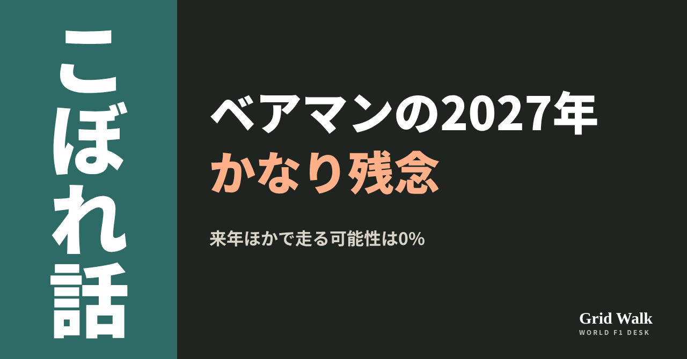<button class="cp dl" data-img="img/bearman-2027-contract-wait-20261119.png" data-name="bearman-2027-contract-wait-20261119_見出し画像.png">ダウンロード</button></li>
<li class="st"><div class="hd"><span class="no">2</span><b>タイトル</b></div><div class="bx" id="p1t">ベアマン「かなり残念」　21戦目でも2027年の契約なし</div><button class="cp" data-plain="p1t">タイトルをコピー</button></li>
<li class="st"><div class="hd"><span class="no">3</span><b>本文</b></div><div class="bx tall" id="p1r"><p>ラスベガスGPの週になっても、ハースのオリバー・ベアマンには2027年の契約がありません。イギリスのThe Raceが11月19日に伝えた本人の言葉には、不満がにじんでいました。</p><p>元の記事へのリンクと、契約オプションの解説はサイトで → <a href="https://f1gridwalk.github.io/lens/bearman-2027-contract-wait-20261119/?utm_source=note&amp;utm_campaign=bearman-2027-contract-wait-20261119">https://f1gridwalk.github.io/lens/bearman-2027-contract-wait-20261119/?utm_source=note&amp;utm_campaign=bearman-2027-contract-wait-20261119</a></p><blockquote><p>「20何戦目かのこの場所に座っていて、来年の契約にサインしていないのは、かなり残念だ」「奇妙な、奇妙な状況だった。でも、まとまりつつある。言えるのは、少し残念だということだけだ」（ベアマン、The Race／イギリス）</p></blockquote><p>F1公式のカレンダーで、ラスベガスGPは全23戦の21戦目です。F1公式によると、ベアマンはサンパウロGPを終えてドライバーズ選手権13位、23点。The Raceによると、ベアマンは来年ほかのチームで走る可能性を「0%」と話し、2027年もハースで3年目のシーズンを走る見込みです。サイトの要約は https://f1gridwalk.github.io/news/en-therace-bearman-contract-disappointed/ にあります。</p><h2>3連戦での進展は実らず</h2><blockquote><p>「僕がハースに残ろうとしているのは、はっきりしている。僕にはハースに残る資格がある」（ベアマン、The Race／イギリス）</p></blockquote><p>The Raceによると、アメリカ、メキシコシティ、サンパウロの3連戦の間に突破口が開けたように見えたものの、実を結びませんでした。</p><blockquote><p>「前の3連戦で、まずまず前に進んだと本当に思っていた。でも、そうではないのかもしれない。だから、少し残念なんだ」「この週末を終えるときに、いい知らせを伝えられるといいんだけど」（ベアマン、The Race／イギリス）</p></blockquote><p>来年への準備に響いていないかと聞かれると、契約がないままなのはいい気分ではないと答え、こう続けました。</p><blockquote><p>「正直に言って、契約にサインしないままここにいていい理由なんてない」（ベアマン、The Race／イギリス）</p></blockquote><h2>The Raceが伝える遅れのわけ</h2><p>The Raceは、発表が遅れているわけを、ベアマンのマネジメントとフェラーリの間の、もっと先の将来をめぐる話し合いが長引き、まとまっていないことだと書いています。中身は、ルイス・ハミルトンとシャルル・ルクレールとの契約がまだ残るフェラーリで、ベアマンにどんな機会があるかだと伝えられている、とも書いています。</p><p>The Raceによると、ハースはベアマンを残したい考えです。考えられる道は、フェラーリと契約しているベアマンを3年目も使えるオプションをハースが使うか、フェラーリとの大きな合意がまとまらない場合に別の契約を結ぶかだといいます。The Raceは、できれば最後の3連戦の間に、フェラーリとの再契約と同時にハースの席も固まる形を見込んでいます。</p><blockquote><p>「僕はフェラーリと契約していて、フェラーリは、そのフェラーリで初めてF1に乗るという、すばらしい機会をくれた」「もちろん、僕はまだフェラーリの育成ドライバーで、いちばんの夢はフェラーリで走ることだ」（ベアマン、The Race／イギリス）</p></blockquote><blockquote><p>「でも、この先を考えれば、そこにいくつか難しさがあるかもしれないのは間違いない。否定はできない」「僕にはあまり口を出せることがない。時間をかけて、どうなっていくかを見るしかない」（ベアマン、The Race／イギリス）</p></blockquote><p>The Raceは、たとえ再契約しても、関係にはいくらか傷がついたとほのめかされている、と書いています。ベアマン本人に責任はないとしても、と添えています。</p><p>編集部としては、本人がハースに残ることへの迷いを見せていないぶん、焦点はハースの席よりも、フェラーリとの先の約束のほうに移っていると見ています。ハースが持つとされるオプションの仕組みは https://f1gridwalk.github.io/deep/rules/contract-option/ で。</p><p><strong>フェラーリの育成ドライバーであることは、今のベアマンにとって追い風だと思いますか、それとも重荷だと思いますか？</strong></p><p>━━━━━━━━━━</p><p><strong>F1 Grid Walk では、世界のF1ニュースを毎日日本語でまとめています。</strong></p><p>海外の記事の要約を、毎日載せています。</p><p><a href="https://f1gridwalk.github.io/">https://f1gridwalk.github.io/</a></p><p>ほかの海外記事も読みたい方は、F1 Grid Walkへ。</p><p><a href="https://f1gridwalk.github.io/lens/bearman-2027-contract-wait-20261119/">https://f1gridwalk.github.io/lens/bearman-2027-contract-wait-20261119/</a></p><p>━━━━━━━━━━</p><p><a href="https://www.the-race.com/formula-1/ollie-bearman-strange-ferrari-f1-contract-situation-2027/">出典：The Race（イギリス）</a></p><p><a href="https://www.formula1.com/en/drivers/oliver-bearman">出典：F1公式サイト（イギリス）</a></p><p><a href="https://www.formula1.com/en/racing/2026">出典：F1公式サイト（イギリス）</a></p></div><button class="cp" data-rich="p1r">本文をコピー</button></li>
<li class="st"><div class="hd"><span class="no">4</span><b>ハッシュタグ</b></div><div class="bx" id="p1h">#F1 #F1jp #ベアマン #ハース #フェラーリ #ラスベガスGP #2027年 #F1こぼれ話 #OFFGRID</div><button class="cp" data-plain="p1h">タグをコピー</button></li>
</ol><h3 class="xh">X</h3><ol class="steps">
<li class="st im"><div class="hd"><b>X用の画像</b><em>画像</em></div>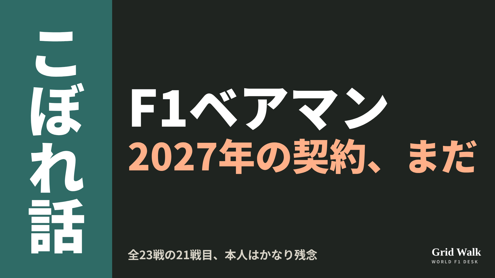<button class="cp dl" data-img="img/x_bearman-2027-contract-wait-20261119.png" data-name="x_bearman-2027-contract-wait-20261119.png">ダウンロード</button></li>
<li class="st"><div class="hd"><b>① noteをシェアするときの文</b></div><div class="bx" id="p1x0">全23戦の21戦目になっても、ハースのベアマンには2027年の契約がありません。本人は英The Raceに「かなり残念」。遅れのわけを、The Raceはフェラーリとの話だと伝えています。noteにまとめました #F1jp #ベアマン #ハース</div><button class="cp" data-plain="p1x0">コピー</button></li>
<li class="st"><div class="hd"><b>② ①への返信</b></div><div class="bx" id="p1x1">ほかの海外記事も読みたい方は、F1 Grid Walkへ。
https://f1gridwalk.github.io/lens/bearman-2027-contract-wait-20261119/?utm_source=x&amp;utm_campaign=bearman-2027-contract-wait-20261119</div><button class="cp" data-plain="p1x1">コピー</button></li>
<li class="st"><div class="hd"><b>③ ②への返信</b></div><div class="bx" id="p1x2">毎日の海外F1ニュースは、日本語でこちらにまとめています。
https://f1gridwalk.github.io/</div><button class="cp" data-plain="p1x2">コピー</button></li>
</ol></section><section class="part" id="p2"><h2><span class="tag">OFF GRID</span>ボッタス「僕は残ります」　キャデラックが2027年の続投を発表</h2><p class="sub">サイトに公開：15:13</p><ol class="steps">
<li class="st im"><div class="hd"><span class="no">1</span><b>見出し画像</b><em>画像</em></div>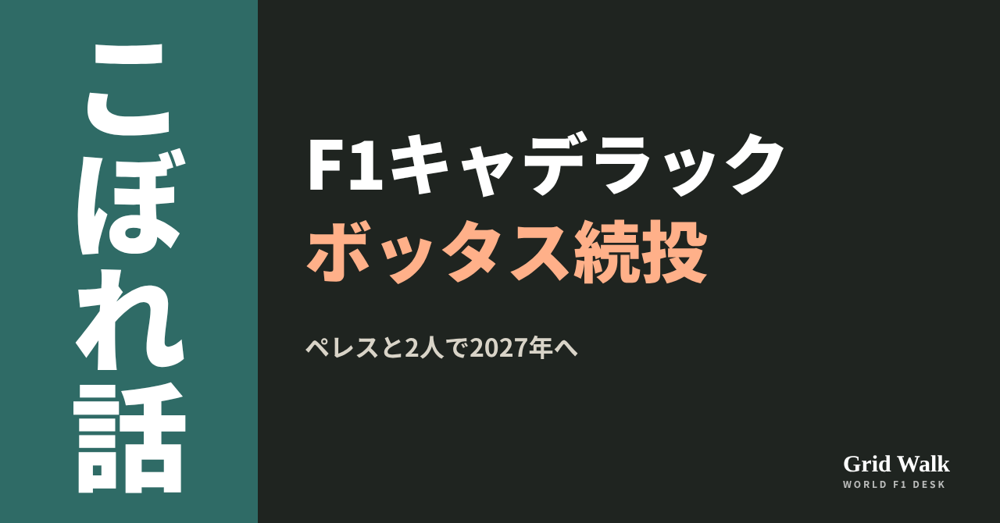<button class="cp dl" data-img="img/cadillac-bottas-2027-20261119.png" data-name="cadillac-bottas-2027-20261119_見出し画像.png">ダウンロード</button></li>
<li class="st"><div class="hd"><span class="no">2</span><b>タイトル</b></div><div class="bx" id="p2t">ボッタス「僕は残ります」　キャデラックが2027年の続投を発表</div><button class="cp" data-plain="p2t">タイトルをコピー</button></li>
<li class="st"><div class="hd"><span class="no">3</span><b>本文</b></div><div class="bx tall" id="p2r"><p>キャデラックが、2027年もバルテリ・ボッタスを走らせると発表しました。F1公式サイトとイギリスのThe Raceが11月18日に伝えています。ボッタスの第一声は、短いものでした。</p><p>元の記事へのリンクと、ボッタスの席をめぐる3つの道の回はサイトで → <a href="https://f1gridwalk.github.io/lens/cadillac-bottas-2027-20261119/?utm_source=note&amp;utm_campaign=cadillac-bottas-2027-20261119">https://f1gridwalk.github.io/lens/cadillac-bottas-2027-20261119/?utm_source=note&amp;utm_campaign=cadillac-bottas-2027-20261119</a></p><blockquote><p>「関係者の皆さんへ。僕は残ります！」「2027年もキャデラックとこの旅を続けられることに、わくわくしています」（ボッタス／F1公式サイト・イギリス）</p></blockquote><p>F1公式サイトによると、ボッタスはチームのデビュー前に複数年の契約を結んでいましたが、2年目は契約のオプションを使うかどうか次第でした。そのオプションが使われ、来季もセルジオ・ペレスとの2人の組み合わせが続きます。発表は、F1公式サイトがチームにとって今季3度目の地元レースと書くラスベガスGPの前でした。サイトの要約は https://f1gridwalk.github.io/news/en-therace-cadillac-bottas-2027/ にあります。</p><h2>ハータの昇格は、来年ではなかった</h2><p>The Raceによると、元インディカーのドライバーで、今季はF2で19位のコルトン・ハータは、10月の終わりにボッタスの後任の最有力候補として浮上しました。ペレスが2029年までの延長を発表する少し前のことです。ハータはスーパーライセンスをめぐる混乱のあと、前戦サンパウロGPで、FP1に出て得た点によってF1に出る資格を手にしていました。</p><p>F1公式サイトは、今回の決定で、チームのテストドライバーを務めるアメリカ人、ハータの来季のF1デビューの望みはなくなったと書いています。チームはリザーブとテストドライバーについて、しかるべき時に発表するとしています。</p><p>11月13日のこぼれ話では、ドイツのMotorsport-Total.comが報じた、この席の3つの道を紹介しました（ https://f1gridwalk.github.io/lens/cadillac-bottas-replacement-20261113/ ）。チームが選んだのは、そのうちの続投の道でした。</p><h2>決め手は継続と安定</h2><p>F1公式サイトによると、チームはこの決定を「継続と安定」を選んだものと説明しています。The Raceが引いたチームの発表は、ボッタスについてこう書いています。</p><blockquote><p>「F1での豊富な経験、技術面の見識、そしてレースに勝ってきた実績をチームにもたらしてくれる」（チームの発表／The Race・イギリス）</p></blockquote><p>CEOのダン・タウリスは、こう話しています。</p><blockquote><p>「バルテリの経験、ものの見方、そして献身は、チームにとって大切な強みです」「継続は、チームを育て、F1での目標に向かっていくうえで、しっかりした土台になります」（タウリスCEO／F1公式サイト・イギリス）</p></blockquote><p>ボッタスも、新しいF1チームを一から作るのは簡単ではないと分かっていた、だからこそ特別な挑戦なのだと話し、こう続けました。</p><blockquote><p>「土台はできました。学んで、良くなっています」「物語は、まだ始まったばかりです」（ボッタス／The Race・イギリス）</p></blockquote><h2>数字が映す1年目</h2><p>もっとも、成績の面では厳しい1年です。F1公式サイトによると、ボッタスは今季9回リタイアしていて、それより多いのはアストンマーティンのランス・ストロール（13回）だけ。チームはまだ初めての点を目指しているところです。The Raceは、チームメイト同士の比較で、ペレスが予選で11勝8敗、決勝で13勝4敗（2人ともリタイアしたオーストリアとハンガリーを除く）とリードしていると書いています。</p><p>編集部としては、キャデラックはグランプリで10勝しているボッタスの経験に、もう1年かけたと見ています。点を取れていない1年目のあとで、選んだのは新しい顔ではなく、いまの2人で続けることでした。ハータの待つ時間がどこまで延びるかは、まだ分かりません。</p><p><strong>2027年もボッタスとペレス。キャデラックのこの選択に、あなたは賛成ですか？</strong></p><p>━━━━━━━━━━</p><p><strong>F1 Grid Walk では、世界のF1ニュースを毎日日本語でまとめています。</strong></p><p>海外の記事の要約を、毎日載せています。</p><p><a href="https://f1gridwalk.github.io/">https://f1gridwalk.github.io/</a></p><p>ほかの海外記事も読みたい方は、F1 Grid Walkへ。</p><p><a href="https://f1gridwalk.github.io/lens/cadillac-bottas-2027-20261119/">https://f1gridwalk.github.io/lens/cadillac-bottas-2027-20261119/</a></p><p>━━━━━━━━━━</p><p><a href="https://www.the-race.com/formula-1/cadillac-keeps-bottas-in-f1-for-2027-despite-herta-rumours/">出典：The Race（イギリス）</a></p><p><a href="https://www.formula1.com/en/latest/article/cadillac-confirm-bottas-will-remain-with-the-team-in-2027.2FzTQfliXlMixOPFUMpPB4">出典：F1公式サイト（イギリス）</a></p></div><button class="cp" data-rich="p2r">本文をコピー</button></li>
<li class="st"><div class="hd"><span class="no">4</span><b>ハッシュタグ</b></div><div class="bx" id="p2h">#F1 #F1jp #キャデラック #ボッタス #コルトンハータ #ペレス #F1移籍 #ラスベガスGP #F1こぼれ話 #OFFGRID</div><button class="cp" data-plain="p2h">タグをコピー</button></li>
</ol><h3 class="xh">X</h3><ol class="steps">
<li class="st im"><div class="hd"><b>X用の画像</b><em>画像</em></div>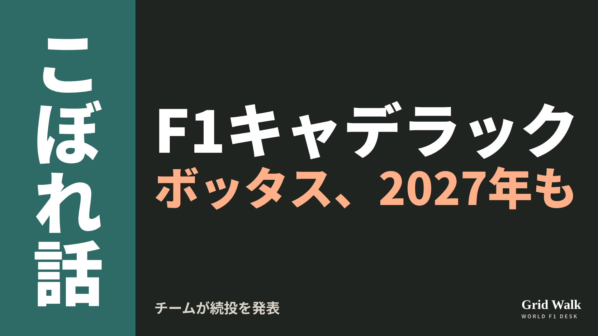<button class="cp dl" data-img="img/x_cadillac-bottas-2027-20261119.png" data-name="x_cadillac-bottas-2027-20261119.png">ダウンロード</button></li>
<li class="st"><div class="hd"><b>① noteをシェアするときの文</b></div><div class="bx" id="p2x0">キャデラックが2027年もボッタスを走らせると発表しました。ボッタスは「僕は残ります」。後任の候補と報じられてきたハータの来季デビューはなくなりました。noteにまとめました #F1jp #ボッタス #キャデラック</div><button class="cp" data-plain="p2x0">コピー</button></li>
<li class="st"><div class="hd"><b>② ①への返信</b></div><div class="bx" id="p2x1">ほかの海外記事も読みたい方は、F1 Grid Walkへ。
https://f1gridwalk.github.io/lens/cadillac-bottas-2027-20261119/?utm_source=x&amp;utm_campaign=cadillac-bottas-2027-20261119</div><button class="cp" data-plain="p2x1">コピー</button></li>
<li class="st"><div class="hd"><b>③ ②への返信</b></div><div class="bx" id="p2x2">毎日の海外F1ニュースは、日本語でこちらにまとめています。
https://f1gridwalk.github.io/</div><button class="cp" data-plain="p2x2">コピー</button></li>
</ol></section><section class="part" id="p3"><h2><span class="tag">OFF GRID</span>マクラーレン、走る前の2027年型F1を競売へ　届くのは2029年末</h2><p class="sub">サイトに公開：15:14</p><ol class="steps">
<li class="st im"><div class="hd"><span class="no">1</span><b>見出し画像</b><em>画像</em></div>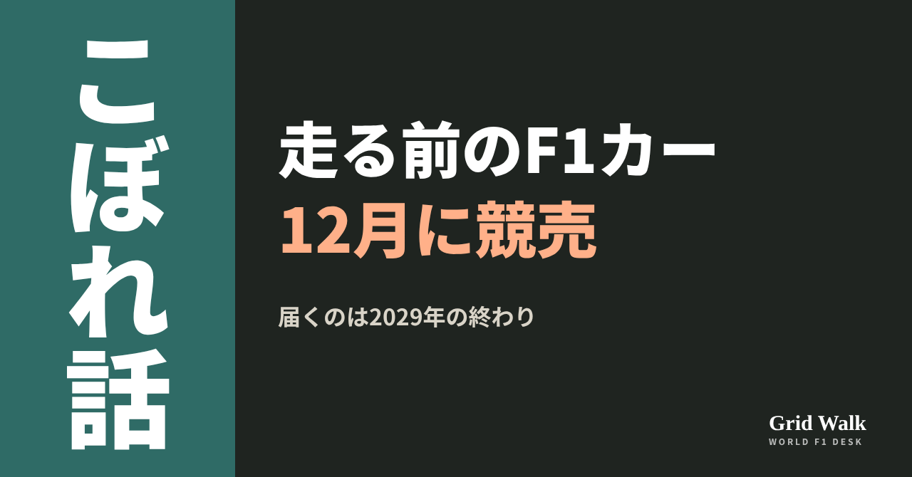<button class="cp dl" data-img="img/mclaren-2027-car-auction-20261119.png" data-name="mclaren-2027-car-auction-20261119_見出し画像.png">ダウンロード</button></li>
<li class="st"><div class="hd"><span class="no">2</span><b>タイトル</b></div><div class="bx" id="p3t">マクラーレン、走る前の2027年型F1を競売へ　届くのは2029年末</div><button class="cp" data-plain="p3t">タイトルをコピー</button></li>
<li class="st"><div class="hd"><span class="no">3</span><b>本文</b></div><div class="bx tall" id="p3r"><p>来年のクルマを、まだ誰も見ていないうちに売る。マクラーレンが2027年型のF1カー、MCL41を競売にかけます。競売を開くのはRMサザビーズで、日にちは12月9日、場所はアラブ首長国連邦のアブダビです。イギリスのThe Raceが11月18日に伝え、RMサザビーズも同じ日にXで発表しました。サイトの要約は https://f1gridwalk.github.io/news/en-therace-mclaren-2027-car-auction/ にあります。</p><p>1年前の2026年型の落札の話と、出品ページや元の記事へのリンクはサイトで → <a href="https://f1gridwalk.github.io/lens/mclaren-2027-car-auction-20261119/?utm_source=note&amp;utm_campaign=mclaren-2027-car-auction-20261119">https://f1gridwalk.github.io/lens/mclaren-2027-car-auction-20261119/?utm_source=note&amp;utm_campaign=mclaren-2027-car-auction-20261119</a></p><h2>予想落札額は900万〜1100万ドル</h2><p>RMサザビーズの出品ページによると、競売はアブダビ・コレクターズ・ウィーク2026の中で行われます。F1公式のカレンダーでは、最終戦の第23戦アブダビGPは12月4〜6日なので、その3日後です。予想落札額は900万〜1100万ドルとされています。</p><p>クルマは、ランド・ノリスとオスカー・ピアストリの車体のどちらかで、落札が決まったときに落札者が選びます。パワーユニットは、メルセデスが作る2027年仕様の1.6リッター・ハイブリッドV6です。塗装はその年のカラーですが、クルマそのものはまだ正式に発表されていません。</p><p>クルマのほかにも付いてくるものがあります。落札者と5人の招待客は、ウォーキングのマクラーレン・テクノロジー・センターを見学し、ザク・ブラウンCEOとノリス、ピアストリに会えます。モナコを含む2戦のグランプリでのもてなしと、ル・マン24時間、インディ500への招待も付きます。The Raceによると、2027年シーズンの発表会にも招かれます。</p><blockquote><p>「モータースポーツを愛する人にとって、これ以上の機会は、ひと言で言って、ありません」（RMサザビーズの出品ページ／カナダ）</p></blockquote><h2>1年前の2026年型は1148万ドル</h2><p>マクラーレンは、1年前にも同じことをしています。RMサザビーズの出品ページによると、2025年12月5日のアブダビの競売で、2026年型のMCL40Aが1148万ドルで落札されました。The Raceは、レースの前に競売にかけられた初めてのF1カーだったと書いています。アメリカのRACERによると、同じ競売ではマクラーレンの2027年の世界耐久選手権（WEC）用ハイパーカーが759万8750ドル、インディカーが84万8750ドルで売れ、3台の合計は1992万7500ドルでした。</p><p>ただし、すぐには手に入りません。MCL40Aの出品ページでは、引き渡しは2028年の第1四半期の終わりで、それまでは2025年型の走らないショーカーを借りることができます。The Raceは、ライバルに大事な知的財産が渡らないようにするための、きびしい決まりがあるからだと説明しています。</p><h2>MCL41が届くのは2029年の終わり</h2><p>今回のMCL41は、出品ページで、引き渡しが2029年の最後の四半期の終わりとされています。2027年の開幕から数えると、3年近く先です。届いたあとに走らせられるのは、決められたデモ走行やサーキット走行で、マクラーレンのエンジニアとメカニックが付きます。The Raceによると、同じ競売には、エイドリアン・ニューウェイが設計したアストンマーティン・ヴァルキリー（予想280万〜320万ドル）も並びます。</p><p>編集部としては、値段よりも、この待ち時間のほうが目を引くと見ています。MCL40Aは、シーズンが始まってから2年ほどで届く約束でした。MCL41は3年近くです。落札者は、自分のクルマが2027年にどれだけ走れたかを見届けてから受け取ることになります。走る前のクルマにいくらの値が付くのかは、12月9日にわかります。</p><p><strong>まだ誰も見ていないF1カーに、1000万ドル前後。あなたなら、どこまで入札しますか？</strong></p><p>━━━━━━━━━━</p><p><strong>F1 Grid Walk では、世界のF1ニュースを毎日日本語でまとめています。</strong></p><p>海外の記事の要約を、毎日載せています。</p><p><a href="https://f1gridwalk.github.io/">https://f1gridwalk.github.io/</a></p><p>ほかの海外記事も読みたい方は、F1 Grid Walkへ。</p><p><a href="https://f1gridwalk.github.io/lens/mclaren-2027-car-auction-20261119/">https://f1gridwalk.github.io/lens/mclaren-2027-car-auction-20261119/</a></p><p>━━━━━━━━━━</p><p><a href="https://www.the-race.com/business/mclaren-to-sell-2027-f1-car-before-it-races/">出典：The Race（イギリス）</a></p><p><a href="https://rmsothebys.com/auctions/ad26/lots/r0011-2027-mclaren-mastercard-formula-1-team-mcl41">出典：RMサザビーズ（カナダ）</a></p><p><a href="https://rmsothebys.com/auctions/ad25/lots/r0008-2026-mclaren-formula-1-team-mcl40a">出典：RMサザビーズ（カナダ）</a></p><p><a href="https://racer.com/2025/12/06/mclaren-raises-19-9-million-with-triple-crown-auction-in-abu-dhabi">出典：RACER（アメリカ）</a></p><p><a href="https://www.formula1.com/en/racing/2026">出典：F1公式サイト（イギリス）</a></p></div><button class="cp" data-rich="p3r">本文をコピー</button></li>
<li class="st"><div class="hd"><span class="no">4</span><b>ハッシュタグ</b></div><div class="bx" id="p3h">#F1 #F1jp #マクラーレン #MCL41 #ノリス #ピアストリ #RMサザビーズ #オークション #F1こぼれ話 #OFFGRID</div><button class="cp" data-plain="p3h">タグをコピー</button></li>
</ol><h3 class="xh">X</h3><ol class="steps">
<li class="st im"><div class="hd"><b>X用の画像</b><em>画像</em></div>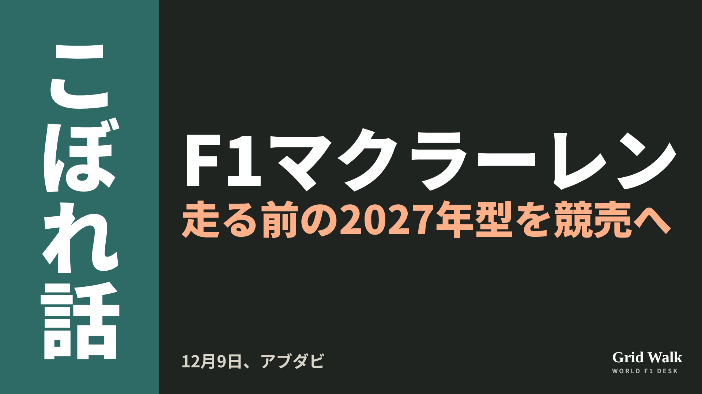<button class="cp dl" data-img="img/x_mclaren-2027-car-auction-20261119.png" data-name="x_mclaren-2027-car-auction-20261119.png">ダウンロード</button></li>
<li class="st"><div class="hd"><b>① noteをシェアするときの文</b></div><div class="bx" id="p3x0">マクラーレンが、まだ走っていない2027年型F1カーMCL41を12月9日にアブダビの競売に出します。予想落札額は900万〜1100万ドル。手元に届くのは2029年の終わりです。noteにまとめました #F1jp #マクラーレン</div><button class="cp" data-plain="p3x0">コピー</button></li>
<li class="st"><div class="hd"><b>② ①への返信</b></div><div class="bx" id="p3x1">ほかの海外記事も読みたい方は、F1 Grid Walkへ。
https://f1gridwalk.github.io/lens/mclaren-2027-car-auction-20261119/?utm_source=x&amp;utm_campaign=mclaren-2027-car-auction-20261119</div><button class="cp" data-plain="p3x1">コピー</button></li>
<li class="st"><div class="hd"><b>③ ②への返信</b></div><div class="bx" id="p3x2">毎日の海外F1ニュースは、日本語でこちらにまとめています。
https://f1gridwalk.github.io/</div><button class="cp" data-plain="p3x2">コピー</button></li>
</ol></section><section class="part" id="p4"><h2><span class="tag">OFF GRID</span>ピアストリ、ラスベガスで10グリッド降格へ　5基目のエンジンで</h2><p class="sub">サイトに公開：15:15</p><ol class="steps">
<li class="st im"><div class="hd"><span class="no">1</span><b>見出し画像</b><em>画像</em></div>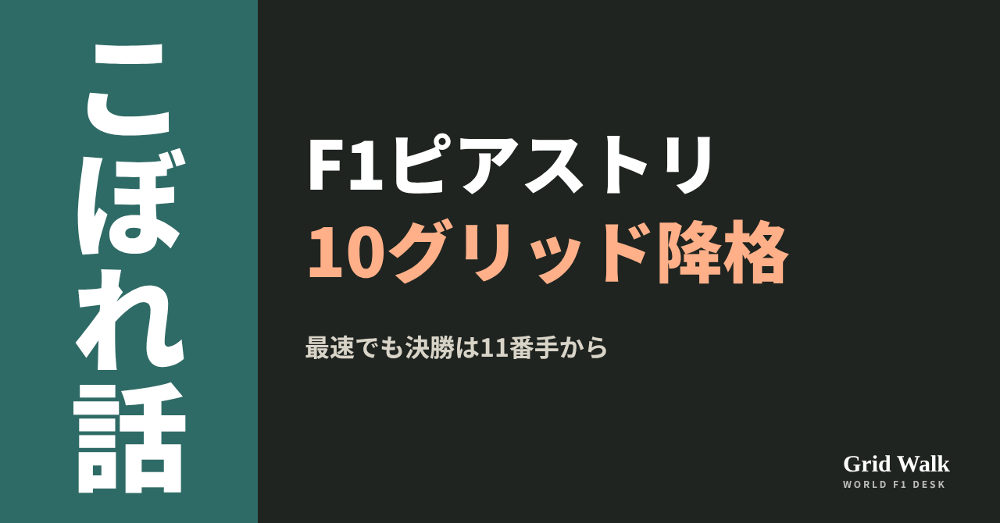<button class="cp dl" data-img="img/piastri-vegas-grid-penalty-20261119.png" data-name="piastri-vegas-grid-penalty-20261119_見出し画像.png">ダウンロード</button></li>
<li class="st"><div class="hd"><span class="no">2</span><b>タイトル</b></div><div class="bx" id="p4t">ピアストリ、ラスベガスで10グリッド降格へ　5基目のエンジンで</div><button class="cp" data-plain="p4t">タイトルをコピー</button></li>
<li class="st"><div class="hd"><span class="no">3</span><b>本文</b></div><div class="bx tall" id="p4r"><p>第21戦ラスベガスGPで、マクラーレンのオスカー・ピアストリは、走り出す前から10グリッド後ろに下がる見通しになりました。イギリスのRacingNews365が11月18日に伝え、F1公式サイトも同じ日、記事の冒頭の要約で、マクラーレンが新しい内燃エンジン（ICE）を載せると確認したと書いています。予選でいちばん速くても、決勝は11番手からのスタートです。</p><p>降格の決まりを解説したルール辞典と、元の記事へのリンクはサイトで → <a href="https://f1gridwalk.github.io/lens/piastri-vegas-grid-penalty-20261119/?utm_source=note&amp;utm_campaign=piastri-vegas-grid-penalty-20261119">https://f1gridwalk.github.io/lens/piastri-vegas-grid-penalty-20261119/?utm_source=note&amp;utm_campaign=piastri-vegas-grid-penalty-20261119</a></p><h2>5基目のエンジン</h2><p>F1公式サイトによると、きっかけは信頼性の問題です。新しいICEに替えることになり、ピアストリは今季初めて、1年に使えるICE4基の枠を超えます。RacingNews365は、残り3戦の最初となるラスベガスで5基目を使う形になると書いています。サイトの要約は https://f1gridwalk.github.io/news/en-racingnews365-piastri-ice-penalty-vegas/ にあります。</p><p>決まりでは、ある部品で初めて上限を超えると10グリッド、同じ部品で2回目からは1回ごとに5グリッドの降格です。RacingNews365も同じように説明しています。くわしくはルール辞典の https://f1gridwalk.github.io/deep/rules/pu-allocation/ と https://f1gridwalk.github.io/deep/rules/grid-penalty/ で。</p><p>どこまで決まった話なのかも見ておきます。RacingNews365の記事は、チームやFIAの発表を引かずに、降格を受けることになると書いています。一方、F1公式サイトは新しいICEをマクラーレンの確認として伝えていますが、見出しは降格を受ける予定という書き方です。</p><h2>後ろから抜けるか</h2><p>チームは、後ろからでも挽回できると見ています。F1公式サイトによると、ラスベガスは追い抜きのできる場所がいくつもあるコースで、マクラーレンはこう見ています。</p><blockquote><p>「追い抜きで順位を取り戻せるチャンスは十分にある」（マクラーレン、F1公式サイト／イギリス）</p></blockquote><p>ピアストリとランド・ノリスの2台には、メルセデスのADUOによる新しいターボも入ります。F1公式サイトによると、こちらはどちらのドライバーも降格になりません。RacingNews365は、ノリスには今のところ降格はないとしています。メルセデス側の話は、11月18日のコラム https://f1gridwalk.github.io/lens/mercedes-aduo-turbo-vegas-20261118/ で紹介しました。</p><p>クルマにも手が入ります。F1公式サイトによると、ブラジルで入れた部品（中心は2027年に向けた学びのための新しいフロントウイング）に、新しいフロアを中心とした部品を加えます。空気抵抗を減らす工夫もいくつか持ち込み、練習走行で試してから、予選と決勝で使うかを決めます。こうした改良は、2027年のクルマの考え方づくりにも役立てるといいます。</p><p>チームにとっては、順位の争いも残っています。F1公式サイトによると、マクラーレンはコンストラクターズ3位をレッドブルと争っていて、差は17点、残りで取れる点は最大129点です。ドライバーズの順位は、F1公式でピアストリが7位、152点です。</p><p>ちなみに、去年のラスベガスでは、ピアストリは4位でゴールしたあと、床下の板（プランク）がすり減って、決まりの9mmを下回ったとして、ノリスとともに失格になりました（F1公式サイト）。</p><p>編集部としては、今回の週末のピアストリは、何位で終わるかよりも、後ろから何台抜けるかが見どころになると見ています。マクラーレン自身が、追い抜きで取り戻せると見ているからです。今季の流れは読み解き https://f1gridwalk.github.io/topics/piastri-story-of-my-year/ で。</p><p><strong>11番手より後ろからのスタート。ピアストリはラスベガスで何位まで上がれると思いますか？</strong></p><p>━━━━━━━━━━</p><p><strong>F1 Grid Walk では、世界のF1ニュースを毎日日本語でまとめています。</strong></p><p>海外の記事の要約を、毎日載せています。</p><p><a href="https://f1gridwalk.github.io/">https://f1gridwalk.github.io/</a></p><p>ほかの海外記事も読みたい方は、F1 Grid Walkへ。</p><p><a href="https://f1gridwalk.github.io/lens/piastri-vegas-grid-penalty-20261119/">https://f1gridwalk.github.io/lens/piastri-vegas-grid-penalty-20261119/</a></p><p>━━━━━━━━━━</p><p><a href="https://racingnews365.com/oscar-piastri-to-take-major-f1-grid-penalty-at-las-vegas-grand-prix">出典：RacingNews365（イギリス）</a></p><p><a href="https://www.formula1.com/en/latest/article/piastri-set-for-10-place-grid-penalty-at-las-vegas-grand-prix.5eT1wWFQzCfOS6W2tvTtLk">出典：F1公式サイト（イギリス）</a></p><p><a href="https://www.formula1.com/en/latest/article/paddock-insider-stella-explains-mclarens-las-vegas-disqualifications-and.7fSHkd8Q5eu6QSWWkUuGCB">出典：F1公式サイト（イギリス）</a></p><p><a href="https://www.formula1.com/en/results/2026/drivers">出典：F1公式サイト（イギリス）</a></p><p><a href="https://www.formula1.com/en/racing/2026">出典：F1公式サイト（イギリス）</a></p></div><button class="cp" data-rich="p4r">本文をコピー</button></li>
<li class="st"><div class="hd"><span class="no">4</span><b>ハッシュタグ</b></div><div class="bx" id="p4h">#F1 #F1jp #マクラーレン #ピアストリ #ノリス #ラスベガスGP #グリッド降格 #パワーユニット #F1こぼれ話 #OFFGRID</div><button class="cp" data-plain="p4h">タグをコピー</button></li>
</ol><h3 class="xh">X</h3><ol class="steps">
<li class="st im"><div class="hd"><b>X用の画像</b><em>画像</em></div>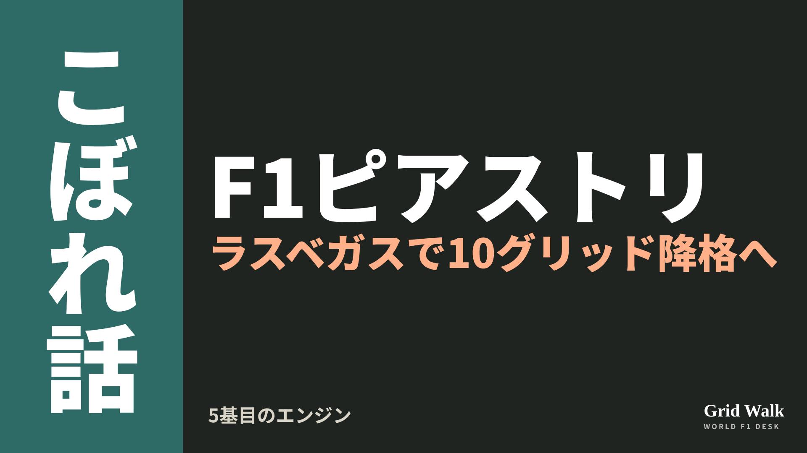<button class="cp dl" data-img="img/x_piastri-vegas-grid-penalty-20261119.png" data-name="x_piastri-vegas-grid-penalty-20261119.png">ダウンロード</button></li>
<li class="st"><div class="hd"><b>① noteをシェアするときの文</b></div><div class="bx" id="p4x0">ピアストリがラスベガスGPで新しいエンジンを載せ、10グリッド降格を受ける見通しです。今季4基の枠を初めて超えます。マクラーレンは追い抜きで順位を取り戻せると見ています。noteにまとめました #F1jp #ピアストリ #ラスベガスGP</div><button class="cp" data-plain="p4x0">コピー</button></li>
<li class="st"><div class="hd"><b>② ①への返信</b></div><div class="bx" id="p4x1">ほかの海外記事も読みたい方は、F1 Grid Walkへ。
https://f1gridwalk.github.io/lens/piastri-vegas-grid-penalty-20261119/?utm_source=x&amp;utm_campaign=piastri-vegas-grid-penalty-20261119</div><button class="cp" data-plain="p4x1">コピー</button></li>
<li class="st"><div class="hd"><b>③ ②への返信</b></div><div class="bx" id="p4x2">毎日の海外F1ニュースは、日本語でこちらにまとめています。
https://f1gridwalk.github.io/</div><button class="cp" data-plain="p4x2">コピー</button></li>
</ol></section><section class="part" id="p5"><h2><span class="tag">OFF GRID</span>FIA会長「V8エンジンはもうすぐやって来る」　関連の投稿はすぐ削除</h2><p class="sub">サイトに公開：15:16</p><ol class="steps">
<li class="st im"><div class="hd"><span class="no">1</span><b>見出し画像</b><em>画像</em></div><button class="cp dl" data-img="img/v8-announcement-timing-20261119.png" data-name="v8-announcement-timing-20261119_見出し画像.png">ダウンロード</button></li>
<li class="st"><div class="hd"><span class="no">2</span><b>タイトル</b></div><div class="bx" id="p5t">FIA会長「V8エンジンはもうすぐやって来る」　関連の投稿はすぐ削除</div><button class="cp" data-plain="p5t">タイトルをコピー</button></li>
<li class="st"><div class="hd"><span class="no">3</span><b>本文</b></div><div class="bx tall" id="p5r"><p>「V8エンジンはもうすぐやって来る」。FIAのモハメド・ビン・スライエム会長がそう書いたインスタグラムの投稿は、ほどなく消されたといいます。ドイツのMotorsport-Totalは11月19日、この発表は早すぎたと見て、その裏に何があったのかを伝えています。サイトの要約は https://f1gridwalk.github.io/news/de-motorsporttotal-v8-2030-hintergrund/ にあります。</p><p>Motorsport-Totalの元の記事と、V8時代やKERSの解説へのリンクはサイトで → <a href="https://f1gridwalk.github.io/lens/v8-announcement-timing-20261119/?utm_source=note&amp;utm_campaign=v8-announcement-timing-20261119">https://f1gridwalk.github.io/lens/v8-announcement-timing-20261119/?utm_source=note&amp;utm_campaign=v8-announcement-timing-20261119</a></p><h2>会合のあとに上がった白い煙</h2><p>記事は、ローマ教皇を選ぶコンクラーベの白い煙のたとえから始まります。11月16日（月曜）、エンジンメーカー、FIA、F1の権利を持つ側が次のパワーユニットを話し合った会合のあと、白い煙のように上がったのが、会長の投稿だったといいます。</p><blockquote><p>「あなたたちが声を上げ、私たちは耳を傾けた。V8エンジンはもうすぐやって来る」（ビン・スライエム、インスタグラムへの投稿。Motorsport-Total／ドイツ）</p></blockquote><p>投稿はFIAのロゴと音の波の絵に、高く回るV8の音をつけたものでした。Motorsport-Totalによると、FIAのほかのSNSの関連する投稿とともに、すぐに消されました。</p><p>記事が続けて書くのは、受け止めの違いです。説明の場では、電動を小さくした2.1リッターのV8ターボに広い支持があるとされていました。それでも、会合に出た複数の参加者は、何が決まったのかについてFIAとは違う受け止めで席を立った、とMotorsport-Totalは書いています。誰のことかは書かれていません。</p><h2>自然吸気か、ターボか</h2><p>記事によると、会長がもともと好むと話していたのは、ターボのない自然吸気のV8に、かつてのKERS（ https://f1gridwalk.github.io/deep/rules/kers/ ）のような形ばかりの電動を足す形でした。会長は、新しいエンジンを2030年に前倒ししたい考えだといいます。</p><p>メーカーの考えは分かれていた、と記事は書いています。アメリカの市場を重く見るフォードとキャデラックは、ターボをやめて、小さくても意味のある電動の割合を持つ形に前向きだったといいます。一方、アウディとホンダにとって自然吸気は受け入れられない条件で、強いハイブリッド化を求めたといいます。</p><p>ターボは残る見込みですが、小さくなり、過給圧も下がるとMotorsport-Totalは伝えています。電動は今の最大350kWから、ふだんは100kWに下がり、追い抜き用にもう100kWを足す形だといいます。V8時代とハイブリッド時代は https://f1gridwalk.github.io/deep/rules/v8-era/ と https://f1gridwalk.github.io/deep/rules/hybrid-era/ で。</p><h2>12月10日、上海の前に</h2><p>記事によると、規則への賛成は、コンコルド協定（ https://f1gridwalk.github.io/deep/rules/concorde-agreement/ ）の商業面の取り決めとも結びついているといいます。メーカーは、開発の時間をとるため、年内にはっきりした答えを必要としています。</p><p>FIAは、12月10日に上海で開く世界モータースポーツ評議会（ https://f1gridwalk.github.io/deep/rules/wmsc/ ）に、2030年の最終的な規則の枠組みを出したい考えです。本当の合意はその前に要る、と記事は書いています。今週の早すぎた喜びは、合意がプレスリリースを用意できるほど近いものの、まだ送信を押せるほどではないしるしだ、とも。ただ、全体の流れが後退するとは限らない、としています。</p><p>なお、会合の翌日の17日（ヨーロッパ時間）には、2030年からの枠組みに基本合意したとするFIAの発表がSNSなどに出て、いくつもの媒体が伝えましたが、短い時間で消されました。消えた理由はわかっていない、とイギリスのThe Raceは書いています（11月17日のコラムの追記 https://f1gridwalk.github.io/lens/v8-engine-proposal-20261117/ ）。</p><p>編集部としては、V8という方向より、電動の割合こそが12月10日までに埋めるべきいちばんの差だと見ています。</p><p><strong>電動を小さくしたV8ターボと、会長が好んだ自然吸気のV8。あなたなら、どちらのF1を見たいですか？</strong></p><p>━━━━━━━━━━</p><p><strong>F1 Grid Walk では、世界のF1ニュースを毎日日本語でまとめています。</strong></p><p>海外の記事の要約を、毎日載せています。</p><p><a href="https://f1gridwalk.github.io/">https://f1gridwalk.github.io/</a></p><p>ほかの海外記事も読みたい方は、F1 Grid Walkへ。</p><p><a href="https://f1gridwalk.github.io/lens/v8-announcement-timing-20261119/">https://f1gridwalk.github.io/lens/v8-announcement-timing-20261119/</a></p><p>━━━━━━━━━━</p><p><a href="https://www.formel1.de/news/news/2026-11-19/f1-motoren-2030-was-hinter-der-verfruehten-v8-ankuendigung-steckt">出典：Formel1.de（元はMotorsport-Total.com）（ドイツ）</a></p><p><a href="https://www.the-race.com/formula-1/whats-going-on-with-f1-confusing-v8s-2030-future-announcement/">出典：The Race（イギリス）</a></p></div><button class="cp" data-rich="p5r">本文をコピー</button></li>
<li class="st"><div class="hd"><span class="no">4</span><b>ハッシュタグ</b></div><div class="bx" id="p5h">#F1 #F1jp #V8 #パワーユニット #FIA #FIA会長 #エンジン規則 #F1こぼれ話 #OFFGRID</div><button class="cp" data-plain="p5h">タグをコピー</button></li>
</ol><h3 class="xh">X</h3><ol class="steps">
<li class="st im"><div class="hd"><b>X用の画像</b><em>画像</em></div>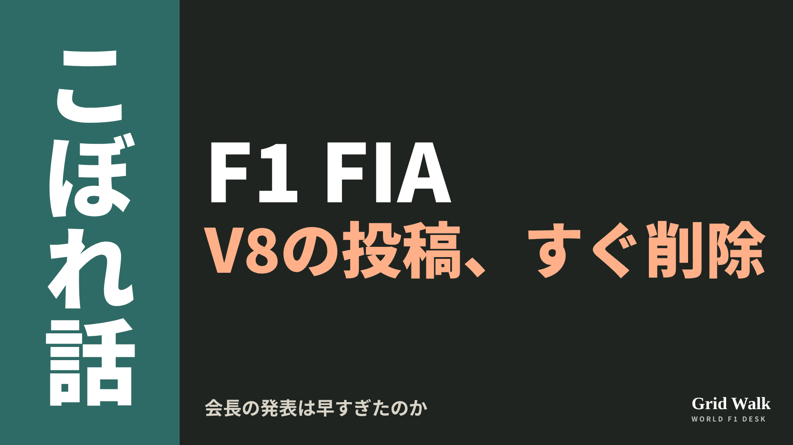<button class="cp dl" data-img="img/x_v8-announcement-timing-20261119.png" data-name="x_v8-announcement-timing-20261119.png">ダウンロード</button></li>
<li class="st"><div class="hd"><b>① noteをシェアするときの文</b></div><div class="bx" id="p5x0">FIAのビン・スライエム会長がインスタグラムに「V8エンジンはもうすぐやって来る」。独Motorsport-Totalによると、関連の投稿はすぐ消され、同誌は発表が早すぎたと見ています。noteにまとめました #F1jp #V8 #FIA</div><button class="cp" data-plain="p5x0">コピー</button></li>
<li class="st"><div class="hd"><b>② ①への返信</b></div><div class="bx" id="p5x1">ほかの海外記事も読みたい方は、F1 Grid Walkへ。
https://f1gridwalk.github.io/lens/v8-announcement-timing-20261119/?utm_source=x&amp;utm_campaign=v8-announcement-timing-20261119</div><button class="cp" data-plain="p5x1">コピー</button></li>
<li class="st"><div class="hd"><b>③ ②への返信</b></div><div class="bx" id="p5x2">毎日の海外F1ニュースは、日本語でこちらにまとめています。
https://f1gridwalk.github.io/</div><button class="cp" data-plain="p5x2">コピー</button></li>
</ol></section><section class="part" id="p6"><h2><span class="tag">OFF GRID</span>アリソン「車をもっと扱いにくくした」　王者メルセデスが失速した理由</h2><p class="sub">サイトに公開：15:17</p><ol class="steps">
<li class="st im"><div class="hd"><span class="no">1</span><b>見出し画像</b><em>画像</em></div>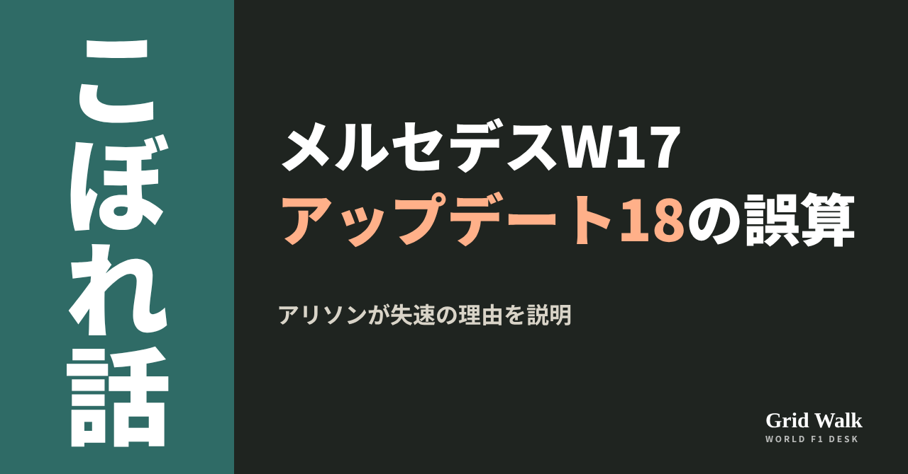<button class="cp dl" data-img="img/mercedes-w17-update18-20261119.png" data-name="mercedes-w17-update18-20261119_見出し画像.png">ダウンロード</button></li>
<li class="st"><div class="hd"><span class="no">2</span><b>タイトル</b></div><div class="bx" id="p6t">アリソン「車をもっと扱いにくくした」　王者メルセデスが失速した理由</div><button class="cp" data-plain="p6t">タイトルをコピー</button></li>
<li class="st"><div class="hd"><span class="no">3</span><b>本文</b></div><div class="bx tall" id="p6r"><p>開幕から6連勝し、ドライバーとコンストラクターズの二冠を決めたメルセデス。ところがF1公式の結果では、直近の5戦で勝ったのは、10月のアメリカGPのアンドレア・キミ・アントネッリだけです。テクニカルディレクターのジェームズ・アリソンが、チームの番組 Nu Silver Arrows Radio Show でその理由を説明したと、ドイツのMotorsport-Totalが11月18日に伝えました。ほかのチームが追いついただけではなく、自分たちの開発が車を扱いにくくした、という話です。</p><p>アリソンの発言を伝えた元の記事と、セパンの改良を追ったDEEP GRIDへのリンクはサイトで → <a href="https://f1gridwalk.github.io/lens/mercedes-w17-update18-20261119/?utm_source=note&amp;utm_campaign=mercedes-w17-update18-20261119">https://f1gridwalk.github.io/lens/mercedes-w17-update18-20261119/?utm_source=note&amp;utm_campaign=mercedes-w17-update18-20261119</a></p><h2>ダウンフォースは増えたのに</h2><blockquote><p>「僕らの最後の性能の一歩、いわゆるアップデート18は、セパンのコースに持ち込み、そのあとアメリカでフロントウイングを足したもの」「ダウンフォースは増えたけれど、車をもっと扱いにくくした」（アリソン、Motorsport-Total／ドイツ）</p></blockquote><p>セパンは、10月4日の第16戦バーレーンGP（マレーシア開催）の舞台です。新しい部品は、そのままタイムにつながったわけではありませんでした。アリソンは、思わぬ副作用もあったと認めています。</p><blockquote><p>「このパッケージには、予想していなかったかたちで少し性能を失った部分がある」（アリソン、Motorsport-Total／ドイツ）</p></blockquote><p>英Motorsport.comも11月14日に、同じ番組での発言として、アップデート18がW17を扱いにくくしたと伝えています。同じ番組でアリソンが来季のダウンフォースについて話した内容は https://f1gridwalk.github.io/lens/allison-2027-downforce-20261116/ で紹介しました。セパンの週末に何が起きたかは、DEEP GRID https://f1gridwalk.github.io/deep/upgrade-slower/ でくわしく追いました。</p><h2>もう削れる重さがなかった</h2><p>アリソンが挙げたもう一つの理由は、車の重さです。今季の規則で、車の最低重量は768kgに下がりました（重さの決まりは https://f1gridwalk.github.io/deep/car-weight/ ）。</p><blockquote><p>「年の初めは、たぶん僕らが重さの下限に届いていた唯一の車だった」（アリソン、Motorsport-Total／ドイツ）</p></blockquote><blockquote><p>「選手権を争うライバルはみんな、まだ少し落とすべきぜい肉があった」「それが彼らにラップタイムをもたらした。僕らにはもう残っていなかったものだ。僕らはすでにスリムで、重さの下限にいたからね」（アリソン、Motorsport-Total／ドイツ）</p></blockquote><p>軽い車ほど速く走れます。ライバルはシーズン中に重さを落としてタイムを稼げたのに、メルセデスにはその余地がなかった、という説明です。F1公式によると、直近の5戦はマックス・フェルスタッペンが3勝、ランド・ノリスが1勝しました。Motorsport-Totalは、アップデート18の問題がこの流れを強めたと書き、新しいフロントウイングでバランスの問題はおおむね収まったとも伝えています。ただ、これは記事の見立てで、アリソン本人の言葉としては載っていません。</p><p>編集部としては、アリソンの説明は、開幕の強さと終盤の伸び悩みを同じ根から見ている点が興味深いと見ています。早く重さの下限に届いたことは開幕の速さにつながり、その分、ライバルには伸びしろが残っていた、という見方になるからです。今季の残りは、ラスベガス、カタール、アブダビの3戦（F1公式）。ウイングを足した仕様でどこまで戻ったのかは、まず現地11月19日に始まるラスベガスで見えてきそうです。</p><p><strong>王者メルセデスの終盤の伸び悩み。自分たちの改良の副作用と、ライバルが重さを削った効果、あなたはどちらが大きかったと見ますか？</strong></p><p>━━━━━━━━━━</p><p><strong>F1 Grid Walk では、世界のF1ニュースを毎日日本語でまとめています。</strong></p><p>海外の記事の要約を、毎日載せています。</p><p><a href="https://f1gridwalk.github.io/">https://f1gridwalk.github.io/</a></p><p>ほかの海外記事も読みたい方は、F1 Grid Walkへ。</p><p><a href="https://f1gridwalk.github.io/lens/mercedes-w17-update18-20261119/">https://f1gridwalk.github.io/lens/mercedes-w17-update18-20261119/</a></p><p>━━━━━━━━━━</p><p><a href="https://www.motorsport.com/f1/news/james-allison-admits-flawed-update-18-made-the-mercedes-w17-a-handful/10874437/">出典：Motorsport.com（イギリス）</a></p><p><a href="https://www.formula1.com/en/results/2026/races">出典：F1公式サイト（イギリス）</a></p><p><a href="https://www.formula1.com/en/racing/2026">出典：F1公式サイト（イギリス）</a></p></div><button class="cp" data-rich="p6r">本文をコピー</button></li>
<li class="st"><div class="hd"><span class="no">4</span><b>ハッシュタグ</b></div><div class="bx" id="p6h">#F1 #F1jp #メルセデス #ジェームズアリソン #W17 #アップデート #最低重量 #ラスベガスGP #F1こぼれ話 #OFFGRID</div><button class="cp" data-plain="p6h">タグをコピー</button></li>
</ol><h3 class="xh">X</h3><ol class="steps">
<li class="st im"><div class="hd"><b>X用の画像</b><em>画像</em></div>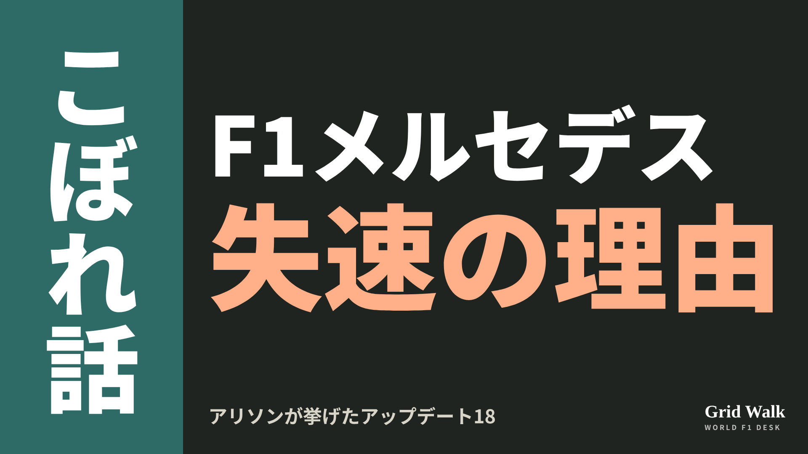<button class="cp dl" data-img="img/x_mercedes-w17-update18-20261119.png" data-name="x_mercedes-w17-update18-20261119.png">ダウンロード</button></li>
<li class="st"><div class="hd"><b>① noteをシェアするときの文</b></div><div class="bx" id="p6x0">開幕6連勝のメルセデスが、直近5戦は1勝。アリソンはセパンのアップデート18が「車をもっと扱いにくくした」と説明しました。もう一つの理由は重さの下限です。noteにまとめました #F1jp #メルセデス</div><button class="cp" data-plain="p6x0">コピー</button></li>
<li class="st"><div class="hd"><b>② ①への返信</b></div><div class="bx" id="p6x1">ほかの海外記事も読みたい方は、F1 Grid Walkへ。
https://f1gridwalk.github.io/lens/mercedes-w17-update18-20261119/?utm_source=x&amp;utm_campaign=mercedes-w17-update18-20261119</div><button class="cp" data-plain="p6x1">コピー</button></li>
<li class="st"><div class="hd"><b>③ ②への返信</b></div><div class="bx" id="p6x2">毎日の海外F1ニュースは、日本語でこちらにまとめています。
https://f1gridwalk.github.io/</div><button class="cp" data-plain="p6x2">コピー</button></li>
</ol></section><section class="part" id="p7"><h2><span class="tag">OFF GRID</span>ブレーキに厳しかったモンツァ　ブレンボ担当者「もうそうではない」</h2><p class="sub">サイトに公開：15:18</p><ol class="steps">
<li class="st im"><div class="hd"><span class="no">1</span><b>見出し画像</b><em>画像</em></div>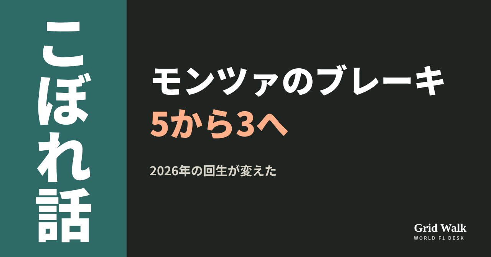<button class="cp dl" data-img="img/monza-brakes-2026-20261119.png" data-name="monza-brakes-2026-20261119_見出し画像.png">ダウンロード</button></li>
<li class="st"><div class="hd"><span class="no">2</span><b>タイトル</b></div><div class="bx" id="p7t">ブレーキに厳しかったモンツァ　ブレンボ担当者「もうそうではない」</div><button class="cp" data-plain="p7t">タイトルをコピー</button></li>
<li class="st"><div class="hd"><span class="no">3</span><b>本文</b></div><div class="bx tall" id="p7r"><p>モンツァはもう、ブレーキに特に厳しいコースのひとつではない。ブレーキメーカー、ブレンボの担当者の話です。ドイツのMotorsport-Totalが11月18日に伝えました。</p><p>元の記事とブレンボのデータへのリンク、回生の仕組みの解説はサイトで → <a href="https://f1gridwalk.github.io/lens/monza-brakes-2026-20261119/?utm_source=note&amp;utm_campaign=monza-brakes-2026-20261119">https://f1gridwalk.github.io/lens/monza-brakes-2026-20261119/?utm_source=note&amp;utm_campaign=monza-brakes-2026-20261119</a></p><blockquote><p>「モンツァは、以前はブレーキにとっていちばん厳しいコースのひとつだった。いまは、もうそうではない」（アンドレア・アルジェリ、ブレンボのF1顧客担当マネージャー、Motorsport-Total／ドイツ）</p></blockquote><p>サイトの要約は https://f1gridwalk.github.io/news/de-motorsporttotal-monza-bremsen-2026/ にあります。</p><h2>数字で見ると、5から3へ</h2><p>ブレンボはレースごとに、ブレーキの難しさを1〜5の5段階で示しています。ブレンボ公式サイトの2025年の解説では、モンツァは5。1周にブレーキは7回で、合わせて9.25秒足らず。1コーナーの減速は4.7Gでした。</p><p>2026年は出典が別で、イタリアのAutomoto.itが9月に伝えたブレンボのシミュレーションによると、難しさは3。ブレーキは1周5回、合わせて8.5秒足らず、1コーナーの減速は3.8Gです。</p><h2>電気が、ブレーキの仕事を肩代わり</h2><p>理由は2026年のパワーユニットです。モーターのMGU-Kの出力が120kWから350kWになり、減速のときに電気をつくりながら、後輪を止める仕事の一部を受け持つようになりました。仕組みは用語集のエネルギー回生 https://f1gridwalk.github.io/deep/rules/harvesting/ と、ブレーキ・バイ・ワイヤ https://f1gridwalk.github.io/deep/rules/brake-by-wire/ で。</p><p>Motorsport-Totalによると、モンツァは長い直線で電気をたくさん使えるので、電池に空きができ、次のブレーキでまた多くを回生できます。そのぶん摩擦ブレーキの出番が減りました。</p><blockquote><p>「課題は、もう最大のブレーキの力を出すことではない」（アルジェリ、Motorsport-Total／ドイツ）</p></blockquote><p>いまの課題は、油圧と回生のブレーキを合わせ、ドライバーに違いを感じさせないことだといいます。</p><h2>いま厳しいのは、シンガポールとオーストリア</h2><p>ブレンボの見方では、いま特に厳しいのはこの2つ。</p><blockquote><p>「シンガポールでは、コースの形のせいで、ずっとブレーキを踏んでいる」「つまり、いつも電池の容量の限界の近くにいる」（アルジェリ、Motorsport-Total／ドイツ）</p></blockquote><p>電気をためる余地がなければ、摩擦のブレーキが働きます。後輪のブレーキの温度が上がり、抑える必要があるといいます。ブレンボ公式の2026年のシンガポールのデータでも難しさは5。レースの24%でブレーキを使い、この割合は今季でいちばん高いとしています。</p><p>反対の端は鈴鹿とシルバーストンで、いちばん負担が軽いのはいまもこの2つです。ブレーキを使わない速い区間が長く、カーボンの温度が気温に近いこともあったといいます。ブレンボによると、カーボンがよく働くのは350〜550℃（ディスクは1000℃まで耐える）。用語集にあるF1公式の400〜800℃とは、出典で幅が違います。</p><p>ブレンボは、2027年に回生の決まりが少し変わると見ています。パフォーマンス部門の責任者、マリオ・アルモンドはこう話しています。</p><blockquote><p>「このバランスがわずかに、たとえば5ポイント動いて45対55になるだけでも、あるコースでのブレーキのかけ方が、前の年とはがらりと変わりうる」（アルモンド、Motorsport-Total／ドイツ）</p></blockquote><p>アルモンドは、コースによっては昔ながらの摩擦ブレーキの出番がずっと増えるとも話し、「ブレーキがうまい者は、加速もうまい」と言います。編集部としては、2026年はブレーキに厳しいコースの顔ぶれを、直線の長さよりも電池の余裕が決めるようになった年だと見ています。</p><p><strong>来年、回生の配分が少し変わったら、モンツァはまたブレーキに厳しいコースに戻ると思いますか？</strong></p><p>━━━━━━━━━━</p><p><strong>F1 Grid Walk では、世界のF1ニュースを毎日日本語でまとめています。</strong></p><p>海外の記事の要約を、毎日載せています。</p><p><a href="https://f1gridwalk.github.io/">https://f1gridwalk.github.io/</a></p><p>ほかの海外記事も読みたい方は、F1 Grid Walkへ。</p><p><a href="https://f1gridwalk.github.io/lens/monza-brakes-2026-20261119/">https://f1gridwalk.github.io/lens/monza-brakes-2026-20261119/</a></p><p>━━━━━━━━━━</p><p><a href="https://www.motorsport-total.com/formel-1/news/warum-monza-seit-2026-nicht-mehr-zu-den-haertesten-bremsenstrecken-zaehlt-26111812">出典：Motorsport-Total（ドイツ）</a></p><p><a href="https://www.automoto.it/formula1/f1-gp-italia-2026-monza-staccate-frenate-brembo-analisi.html">出典：Automoto.it（イタリア）</a></p><p><a href="https://www.brembo.com/en/motorsport/formula1/2025/facts-formula1-gp-monza">出典：ブレンボ公式サイト（イタリア）</a></p><p><a href="https://www.brembo.com/en/motorsport/formula1/2026/facts-singapore-2026">出典：ブレンボ公式サイト（イタリア）</a></p></div><button class="cp" data-rich="p7r">本文をコピー</button></li>
<li class="st"><div class="hd"><span class="no">4</span><b>ハッシュタグ</b></div><div class="bx" id="p7h">#F1 #F1jp #ブレンボ #ブレーキ #モンツァ #シンガポールGP #2026年規則 #MGUK #F1こぼれ話 #OFFGRID</div><button class="cp" data-plain="p7h">タグをコピー</button></li>
</ol><h3 class="xh">X</h3><ol class="steps">
<li class="st im"><div class="hd"><b>X用の画像</b><em>画像</em></div>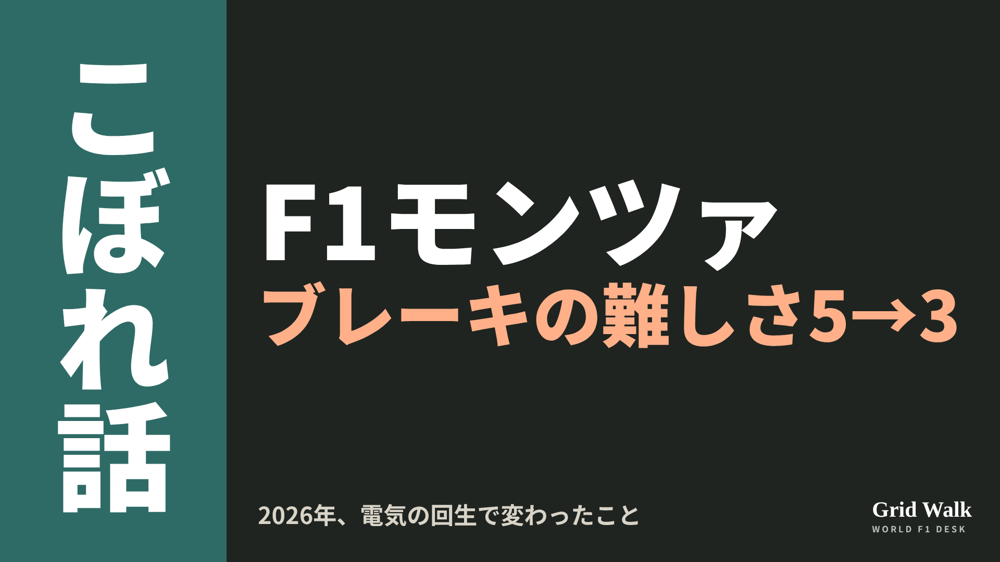<button class="cp dl" data-img="img/x_monza-brakes-2026-20261119.png" data-name="x_monza-brakes-2026-20261119.png">ダウンロード</button></li>
<li class="st"><div class="hd"><b>① noteをシェアするときの文</b></div><div class="bx" id="p7x0">ブレーキに厳しいコースのひとつだったモンツァ。ブレンボの担当者は「もうそうではない」と話しました。理由は電気の回生が大きくなったこと。いま厳しいのはシンガポールとオーストリアです。noteにまとめました #F1jp #ブレンボ</div><button class="cp" data-plain="p7x0">コピー</button></li>
<li class="st"><div class="hd"><b>② ①への返信</b></div><div class="bx" id="p7x1">ほかの海外記事も読みたい方は、F1 Grid Walkへ。
https://f1gridwalk.github.io/lens/monza-brakes-2026-20261119/?utm_source=x&amp;utm_campaign=monza-brakes-2026-20261119</div><button class="cp" data-plain="p7x1">コピー</button></li>
<li class="st"><div class="hd"><b>③ ②への返信</b></div><div class="bx" id="p7x2">毎日の海外F1ニュースは、日本語でこちらにまとめています。
https://f1gridwalk.github.io/</div><button class="cp" data-plain="p7x2">コピー</button></li>
</ol></section><section class="part" id="p8"><h2><span class="tag">OFF GRID</span>「事故をただの不運とは言えない」　アントネッリの父がラッセルに反論</h2><p class="sub">サイトに公開：15:19</p><ol class="steps">
<li class="st im"><div class="hd"><span class="no">1</span><b>見出し画像</b><em>画像</em></div>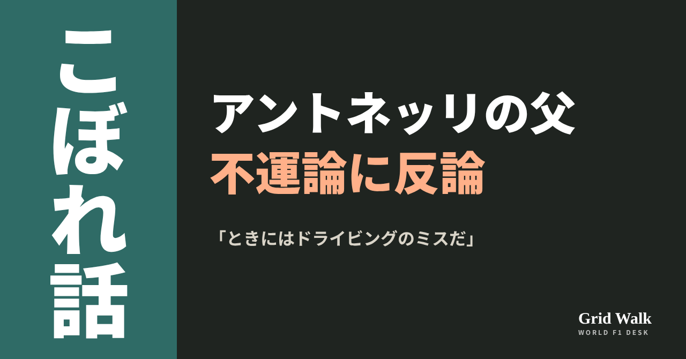<button class="cp dl" data-img="img/marco-antonelli-russell-luck-20261119.png" data-name="marco-antonelli-russell-luck-20261119_見出し画像.png">ダウンロード</button></li>
<li class="st"><div class="hd"><span class="no">2</span><b>タイトル</b></div><div class="bx" id="p8t">「事故をただの不運とは言えない」　アントネッリの父がラッセルに反論</div><button class="cp" data-plain="p8t">タイトルをコピー</button></li>
<li class="st"><div class="hd"><span class="no">3</span><b>本文</b></div><div class="bx tall" id="p8r"><p>ラッセルの今季は、不運のせいだったのか。今季の王者アンドレア・キミ・アントネッリの父、マルコ・アントネッリが、そうとばかりは言えないと話しました。オランダのGPFans（英語版）によると、フランスのモータースポーツ誌AUTOhebdoに語ったものです。</p><p>元の記事へのリンクと、ラッセルの今季を追った読み解きへの案内はサイトで → <a href="https://f1gridwalk.github.io/lens/marco-antonelli-russell-luck-20261119/?utm_source=note&amp;utm_campaign=marco-antonelli-russell-luck-20261119">https://f1gridwalk.github.io/lens/marco-antonelli-russell-luck-20261119/?utm_source=note&amp;utm_campaign=marco-antonelli-russell-luck-20261119</a></p><p>F1公式によると、第20戦サンパウロGPを終えて、王座を決めたアントネッリは390点。メルセデスのチームメイト、ジョージ・ラッセルは262点で3位です。勝利数はアントネッリが9、ラッセルが3。11月19〜21日の第21戦ラスベガスGPを前に、ラッセルは2位のフェルスタッペンと17点差、4位のハミルトンとは1点差にいます。</p><h2>本命と見られていたのはラッセル</h2><p>GPFansは、ラッセルはシーズン前、初の王座の本命と見られ、若いチームメイトより上に行くと思われていたと書いています。マルコも、そこは認めています。</p><blockquote><p>「信じられないことだ。こんなに若くて経験の浅いドライバーに、誰もこの結果を予想していなかったと思う」「みんな、ラッセルが息子より多く勝つと予想していたと思う」「でも結局、息子はとても安定していた」（マルコ・アントネッリ、AUTOhebdo／フランス、GPFans経由）</p></blockquote><h2>事故は運か、ミスか</h2><p>そのうえでマルコは、ラッセルが不運だったという見方に踏み込みました。</p><blockquote><p>「ラッセルには不運もあった。でも、チームメイト以上ではない」「キミも予選で苦しんだし、決勝では2回リタイアしている」「ジョージが何度か事故を起こしたのは本当だ。でも、事故をただの不運とは言えない。ときにはドライビングのミスだ」「だから、息子はこの王座にまったくふさわしいと思う」（マルコ・アントネッリ、AUTOhebdo／フランス、GPFans経由）</p></blockquote><p>ラッセル本人も、不運だけで片づけてはいません。イギリスのCrash.netによると、サンパウロGPを前に、こう話しています。</p><blockquote><p>「ひどい運だった」「でも、勝てなかったことをただ運のせいにするほど、ナイーブになってはいけないとも思う」「これだけ何度も起きているのに、それは運なのか、と問わないといけない」「自分を鏡で厳しく見て、どこでもっといい仕事ができたかを考える必要がある」（ラッセル、Crash.net／イギリス）</p></blockquote><p>Crash.netは、メキシコシティGPでラッセルが予選2番手から、1周目のハジャーとの接触で10秒のタイムペナルティを受け、6位に終わったことも伝えています。アントネッリが3位に入り、王座を決めたレースです。</p><h2>7月、アントネッリ本人の答え</h2><p>同じ問いには、アントネッリ本人が7月に答えています。イギリスのPlanetF1が7月18日に伝えたもので、当時2人の差は25点でした。</p><blockquote><p>「判断するのは本当に難しい。そう、彼には不運があった。それは確かだ」「でも、僕たち2人とも不運があったと言わないといけない」（アントネッリ、PlanetF1／イギリス）</p></blockquote><p>編集部としては、父と本人の言い方は近いと見ています。どちらもラッセルの不運を打ち消してはおらず、不運は2人ともにあった、という点で重なるからです。違うのは、マルコが事故の中にはドライビングのミスもあったと、はっきり言ったところです。そしてラッセル自身も、運だけでは説明できないと話しています。残り3戦の2位争いで、ラッセルがどんな走りを見せるかが次の答えになりそうです。ラッセルの今季の流れは、読み解き https://f1gridwalk.github.io/topics/russell-next-year-we-fight-again/ で。</p><p><strong>ラッセルが今季の王座に届かなかったのは、運のせいだと思いますか？　それとも、ほかに理由があったと思いますか？</strong></p><p>━━━━━━━━━━</p><p><strong>F1 Grid Walk では、世界のF1ニュースを毎日日本語でまとめています。</strong></p><p>海外の記事の要約を、毎日載せています。</p><p><a href="https://f1gridwalk.github.io/">https://f1gridwalk.github.io/</a></p><p>ほかの海外記事も読みたい方は、F1 Grid Walkへ。</p><p><a href="https://f1gridwalk.github.io/lens/marco-antonelli-russell-luck-20261119/">https://f1gridwalk.github.io/lens/marco-antonelli-russell-luck-20261119/</a></p><p>━━━━━━━━━━</p><p><a href="https://www.gpfans.com/en/f1-news/1092954/kimi-antonelli-father-george-russell-f1-title-verdict/">出典：GPFans（英語版）（オランダ）</a></p><p><a href="https://www.crash.net/f1/news/1109345/1/george-russell-questions-rate-atrocious-luck-after-crushing-f1-title-defeat">出典：Crash.net（イギリス）</a></p><p><a href="https://www.planetf1.com/news/kimi-antonelli-responds-george-russell-luck-claim-amidst-title-fight">出典：PlanetF1（イギリス）</a></p><p><a href="https://www.formula1.com/en/results/2026/drivers">出典：F1公式サイト（イギリス）</a></p><p><a href="https://www.formula1.com/en/results/2026/races">出典：F1公式サイト（イギリス）</a></p></div><button class="cp" data-rich="p8r">本文をコピー</button></li>
<li class="st"><div class="hd"><span class="no">4</span><b>ハッシュタグ</b></div><div class="bx" id="p8h">#F1 #F1jp #アントネッリ #ラッセル #メルセデス #ラスベガスGP #F1こぼれ話 #OFFGRID</div><button class="cp" data-plain="p8h">タグをコピー</button></li>
</ol><h3 class="xh">X</h3><ol class="steps">
<li class="st im"><div class="hd"><b>X用の画像</b><em>画像</em></div>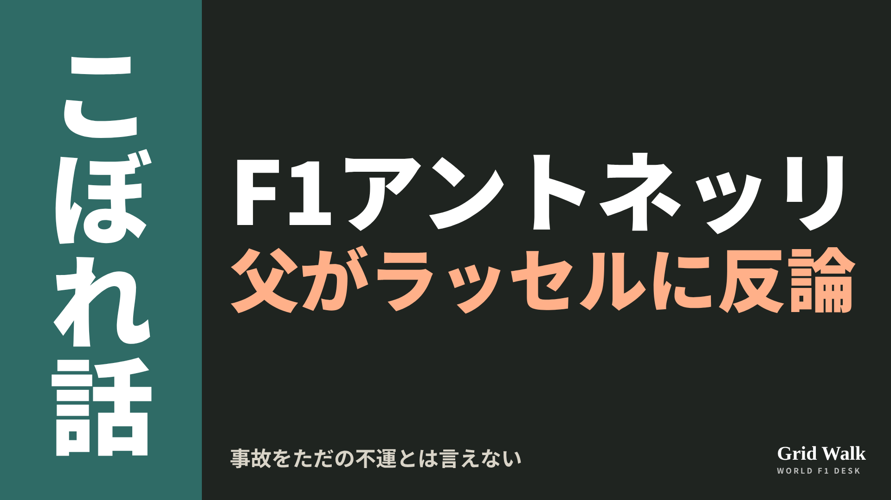<button class="cp dl" data-img="img/x_marco-antonelli-russell-luck-20261119.png" data-name="x_marco-antonelli-russell-luck-20261119.png">ダウンロード</button></li>
<li class="st"><div class="hd"><b>① noteをシェアするときの文</b></div><div class="bx" id="p8x0">王者アントネッリの父マルコが、仏AUTOhebdoで「事故をただの不運とは言えない」。ラッセルの不運はチームメイト以上ではなかったと話しました。noteにまとめました #F1jp #アントネッリ #ラッセル</div><button class="cp" data-plain="p8x0">コピー</button></li>
<li class="st"><div class="hd"><b>② ①への返信</b></div><div class="bx" id="p8x1">ほかの海外記事も読みたい方は、F1 Grid Walkへ。
https://f1gridwalk.github.io/lens/marco-antonelli-russell-luck-20261119/?utm_source=x&amp;utm_campaign=marco-antonelli-russell-luck-20261119</div><button class="cp" data-plain="p8x1">コピー</button></li>
<li class="st"><div class="hd"><b>③ ②への返信</b></div><div class="bx" id="p8x2">毎日の海外F1ニュースは、日本語でこちらにまとめています。
https://f1gridwalk.github.io/</div><button class="cp" data-plain="p8x2">コピー</button></li>
</ol></section></main><script>
function done(b,msg){const t=b.dataset.t||b.textContent;b.dataset.t=t;b.classList.add('ok');b.textContent=msg||'コピーしました';setTimeout(()=>{b.classList.remove('ok');b.textContent=t},2000)}
function selectEl(el){const r=document.createRange();r.selectNodeContents(el);const s=getSelection();s.removeAllRanges();s.addRange(r)}
async function rich(el,b){
  try{await navigator.clipboard.write([new ClipboardItem({'text/html':new Blob([el.innerHTML],{type:'text/html'}),'text/plain':new Blob([el.innerText],{type:'text/plain'})})]);done(b);return}catch(e){}
  selectEl(el);let ok=false;try{ok=document.execCommand('copy')}catch(e){}
  if(ok){getSelection().removeAllRanges();done(b)}else{done(b,'選択しました。コピーしてください')}}
async function plain(el,b){
  try{await navigator.clipboard.writeText(el.innerText);done(b);return}catch(e){}
  selectEl(el);let ok=false;try{ok=document.execCommand('copy')}catch(e){}
  if(ok){getSelection().removeAllRanges();done(b)}else{done(b,'選択しました。コピーしてください')}}
let dlns=null;(async()=>{try{dlns=await window.claude?.use?.("downloads")}catch(e){dlns=null}})();
async function img(src,b){
  b.dataset.t=b.dataset.t||b.textContent;
  if(!dlns){try{dlns=await window.claude?.use?.("downloads")}catch(e){}}
  if(!dlns){b.textContent='ダウンロードできませんでした';setTimeout(()=>{b.textContent=b.dataset.t},3500);return}
  try{const blob=await fetch(src).then(r=>r.blob());b.textContent='保存の確認を開いています…';
    await dlns.save({filename:b.dataset.name,data:blob});done(b,'ダウンロードしました')}
  catch(e){const c=e&&e.code;b.textContent=c==='declined'?'キャンセルしました':c==='rate_limited'?'少し待ってからもう一度押してください':'ダウンロードできませんでした';setTimeout(()=>{b.textContent=b.dataset.t},3500)}}
document.querySelectorAll('.cp').forEach(b=>b.addEventListener('click',()=>{
  if(b.dataset.rich)rich(document.getElementById(b.dataset.rich),b);
  else if(b.dataset.plain)plain(document.getElementById(b.dataset.plain),b);
  else img(b.dataset.img,b)}));
</script>